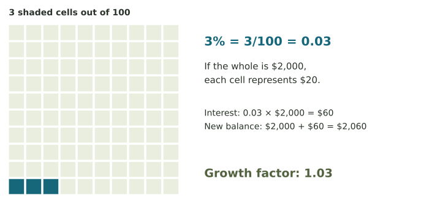
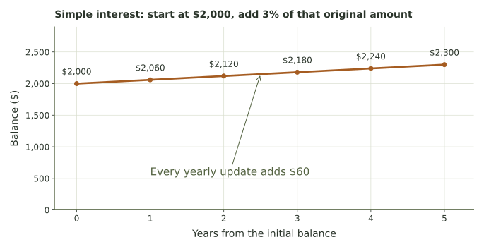
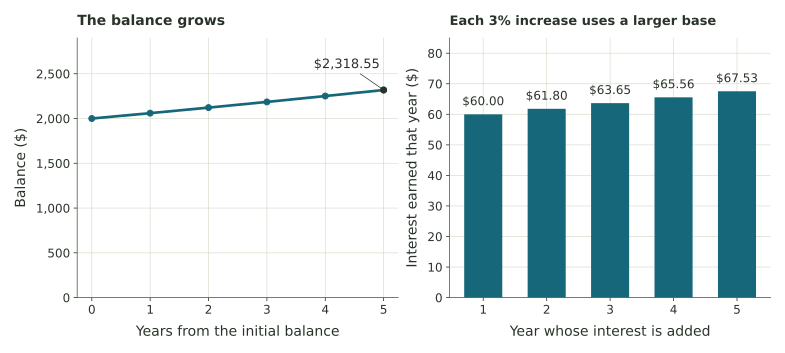
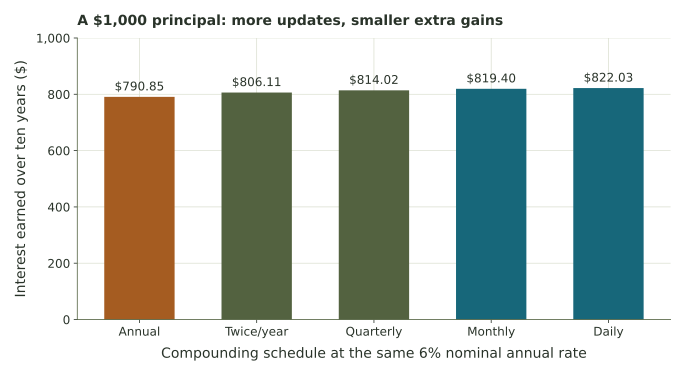
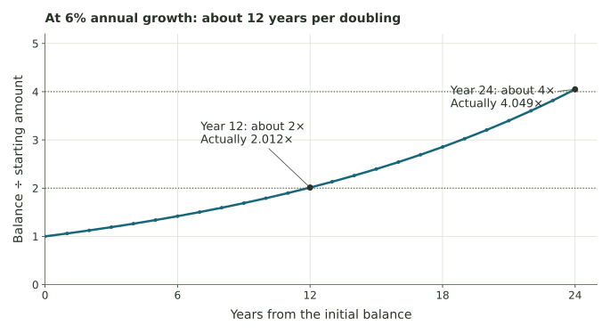
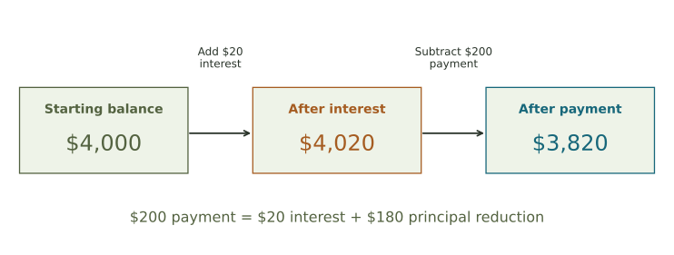
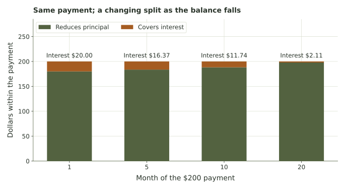
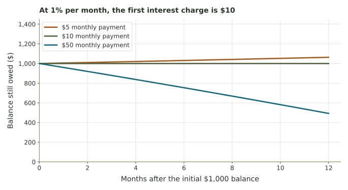

Interest and loans: follow the changing balance.
See how a percentage, a period, and an update rule turn a starting amount into a savings path or a repayment schedule.
The same starting balance can follow different rules
Suppose an account starts with $2,000. A rule adds 3% interest each year. Does that mean it adds $60 every year, or does it calculate 3% of the balance the account has reached? The first year looks the same, but the later years can differ.
Now imagine money owed on a loan. Interest increases the debt, while a payment decreases it. To understand the loan, we need to know which balance the interest uses, when the payment happens, and what remains for the next month.
Week 5 introduced a system’s state and an update rule. Our state this week is a balance, measured in dollars. Each ending balance becomes the next period’s starting state. We will use tables, graphs, and repeated arithmetic to see how the rule shapes the outcome. All rates and balances in the examples are hypothetical.
Build the model
- Convert percentages and match rates to periods.
- Distinguish fixed additions from compound growth.
- Read formulas as repeated balance updates.
Interpret the outcome
- Estimate a doubling time and check its meaning.
- Separate interest from principal reduction.
- Compare a payment, payoff time, and total interest.
Read in order and work the short checks before revealing their explanations. The interest and loan explorer makes both kinds of change visible. The illustrated chapter includes review exercises and complete solutions. The core calculations need arithmetic, powers, and simple equations.
A rate needs an amount to act on and a period to describe
Principal means the initial amount deposited or borrowed. We use P for that starting amount and B for a balance as it changes. A period is one update interval, such as a year or month. Year 0 records the initial balance, before any annual interest is added.
A percentage means “per hundred.” To calculate 3% of $2,000, first write \(3\%=3/100=0.03\), then multiply: \(0.03(2000)=60\) dollars. To keep the original money and add that interest, multiply by \(1+0.03=1.03\).

| Expression | Meaning | For a $2,000 balance |
|---|---|---|
| 0.03B | 3% of the balance | Interest of $60 |
| B + 0.03B | Keep the balance and add its interest | New balance $2,060 |
| 1.03B | The same update written as multiplication | New balance $2,060 |
“3% per year” and “3% per month” describe different updates. In a formula, use a decimal rate whose time unit matches the period. Also keep separate the interest amount and the total balance: earning $60 does not mean the whole account is worth $60.
Example · Read the notation before calculating
\(B_0=2000\) names the starting balance. \(B_1\) means the balance after one update, and \(B_2\) after two. The small number is a period label, not a multiplier. The rule \(B_{k+1}=1.03B_k\) says “multiply the current balance by 1.03 to get the next one.”
A $500 balance earns 4% for one period. What is the interest, the growth factor, and the new balance?
Compare your reasoning
The decimal rate is 0.04, interest is 0.04(500)=$20, the factor is 1.04, and the new balance is $520.
Simple interest adds the same dollar amount each year
With simple interest, interest is calculated on the original principal, not on the accumulated balance. Start at P=$2,000 with annual rate r=0.03. Each year adds the same \(Pr=60\) dollars.

After t years, interest is \(I=Prt\), and total amount is
The formula collects the repeated additions into one calculation. With annual updates, we can also write \(B_{k+1}=B_k+Pr\): the constant step Pr is added to the current total, but calculated from the original principal.
Example · Evaluate and solve backward
After five years, \(A=2000(1+0.03\cdot5)=2300\) dollars. The interest earned is \(2300-2000=300\) dollars.
Suppose instead a simple-interest account grows from $500 to $560 in four years. The $60 gain is $15 per year. Dividing $15 by the $500 original amount gives \(r=0.03\), or 3% per year. Algebra gives the same answer: \(560/500-1=4r\), so \(r=0.12/4=0.03\).
If time is given in months while r is annual, convert months to years. Under a proportional simple-interest model, six months is t=0.5 year; $2,000 at 3% earns \(2000(0.03)(0.5)=30\) dollars over that time.
An account starts at $900 and earns 4% simple annual interest. What is the fixed yearly increase and the total after three years?
Compare your reasoning
The increase is 900(0.04)=$36 per year. After three years, the total is 900+3(36)=$1,008. The $108 gain is interest, not the total balance.
Compound interest lets earlier interest earn interest
With compound interest, each update calculates interest on the balance reached so far. At 3% annually, $2,000 becomes $2,060 after one year. The second year’s interest is \(0.03(2060)=61.80\), so the next balance is $2,121.80.
The annual rule is \(B_{k+1}=(1+r)B_k\). Applying it repeatedly gives
The exponent counts repeated multiplications. For three years, multiply by 1.03 three times; do not replace this by adding 3% of the original amount three times.

| Year | Simple balance ($) | Annual compound balance ($) |
|---|---|---|
| 0 | 2,000.00 | 2,000.00 |
| 1 | 2,060.00 | 2,060.00 |
| 2 | 2,120.00 | 2,121.80 |
| 3 | 2,180.00 | 2,185.45 |
| 4 | 2,240.00 | 2,251.02 |
| 5 | 2,300.00 | 2,318.55 |
At the same positive annual rate, the two models agree after the first annual update. Later, compounding uses the earlier interest as part of its base. At 30 years, the simple model gives $3,800, while the annual compound model gives about $4,854.52.

A curve and a schedule are different parts of a model
The balance table records specified crediting dates. A continuous curve can help us visualize the growth pattern between them, but the account’s terms determine when interest is actually credited. Our explorer uses whole years and specified compounding periods, so the displayed endpoints are completed updates.
Start with $300 at 10% compounded annually. Find the first and second yearly balances, and compare with two years of simple interest.
Compare your reasoning
The balances are 300(1.10)=$330 and 330(1.10)=$363. Simple interest gives 300+2(30)=$360. The extra $3 comes from interest on the first year’s $30 interest.
Monthly compounding changes both the rate and the count
Suppose a model quotes a nominal annual rate r=0.06 and compounds 12 times a year. The rate per monthly update is \(i=r/12=0.005\), which is 0.5%, not 6%. Over ten years there are \(12(10)=120\) monthly updates.
For n equal compounding periods per year and t years, the formula is
Read the inside and outside together: r/n is the rate for one step, and nt is the number of steps. Using a monthly rate with an annual count would model a different amount of time.
Example · Write the substituted expression first
For $1,000 at 6% nominal annual interest compounded monthly for ten years:
\[A=1000\left(1+\frac{0.06}{12}\right)^{120}=1000(1.005)^{120}\approx1819.40.\]
Use parentheses around the full factor and keep the calculator’s precision through the exponent. The final interest earned is approximately $819.40.

For these positive rates, more frequent compounding increases the final amount, with smaller extra gains as the frequencies increase. This comparison does not hold the effective annual yield fixed.
The effective annual yield describes a whole year’s growth
The effective annual yield is the fraction gained over one year, including compounding. For a 3% nominal annual rate compounded monthly,
\[\left(1+\frac{0.03}{12}\right)^{12}-1\approx0.030416,\]
or about 3.0416%. The decimal 0.030416 and the percentage 3.0416% describe the same yield. The nominal rate 3% and the effective yield answer different questions about the update rule.
For a nominal annual rate of 12%, compounded monthly for two years, give the decimal monthly rate and the number of updates.
Compare your reasoning
The monthly rate is 0.12/12=0.01, or 1%. There are 12(2)=24 updates, so the growth factor over the full time is (1.01)^24.
The Rule of 72 estimates repeated percentage growth
For a positive balance growing at a fixed positive annual compound rate, the Rule of 72 estimates the years needed to double:
At 6%, use 72/6=12 years. Do not divide by 0.06. At 9%, the estimate is eight years. These are estimates under a continuing growth rule, not guaranteed future returns.

Example · Check the estimate using powers
At 6% annual compounding, \((1.06)^{11}\approx1.898\) and \((1.06)^{12}\approx2.012\). The first completed annual update reaching twice the starting balance is year 12. The Rule of 72 is a useful scale estimate; it is not an equation making the balance exactly double at year 12.
The same reasoning works for invented compute capacity or another quantity following a fixed percentage rule. It does not describe simple interest, and it does not by itself describe a loan being reduced by payments. At a zero growth rate, a positive starting amount never doubles through this rule.
Use the Rule of 72 to estimate doubling time at 8% and quadrupling time at 6%.
Compare your reasoning
At 8%, one doubling takes about 72/8=9 years. At 6%, one doubling takes about 12 years, so quadrupling takes about 24 years if the rate and compounding assumptions continue.
A payment subtracts from a balance that has just grown
In our loan model, interest is added once a month, then the scheduled payment is applied. Let B be the balance at the start of that month, i the monthly decimal rate, and M the regular payment in dollars.
The annual rate r is divided by 12 under the stated monthly model, so i=r/12. A $4,000 loan at a 6% nominal annual rate uses i=0.06/12=0.005, or 0.5% per month. The first interest charge is $20. In credit-card terminology, APR stands for annual percentage rate; our card exercises explicitly specify the monthly conversion used in their simplified model.

Example · Repeat using the new balance
Month 1: \(4000(1.005)-200=3820\). Month 2 starts at $3,820, so its interest is \(3820(0.005)=19.10\) dollars. After the next $200 payment, the balance is \(3820+19.10-200=3639.10\).
Using $4,000 again in month 2 would incorrectly keep charging the original interest amount. The current balance is part of the rule.
The credit-card examples use a simplified schedule
Our activities use fixed rates, no new purchases or fees, and one interest calculation followed by one payment each month. The Consumer Financial Protection Bureau explains that many real card issuers use daily balance calculations. The monthly model makes the repeated arithmetic visible; actual statements follow their account terms.
A $500 loan balance has 2% interest for one period, then a $60 payment. Find the interest, principal reduction, and ending balance.
Compare your reasoning
Interest is 0.02(500)=$10. The payment reduces principal by 60−10=$50. Ending balance is 500+10−60=$450.
Interest and principal reduction add up to the actual payment
For the decreasing loan above, the monthly payment stays $200, but its parts change. A smaller starting balance generates less interest. More of the same payment can then reduce what is owed.

| Month | Start balance ($) | Interest ($) | Payment ($) | End balance ($) |
|---|---|---|---|---|
| 1 | 4,000.00 | 20.00 | 200.00 | 3,820.00 |
| 2 | 3,820.00 | 19.10 | 200.00 | 3,639.10 |
| 3 | 3,639.10 | 18.20 | 200.00 | 3,457.30 |
| 4 | 3,457.30 | 17.29 | 200.00 | 3,274.59 |
A table of this repeated repayment calculation is often called an amortization schedule. Check each row by adding interest to the start balance and subtracting the actual payment. The next row must begin with the previous row’s ending balance.
State the rounding rule
The loan table in this reading rounds each month’s interest to the nearest cent before updating the balance. The application’s long comparison keeps full internal precision and rounds only the displayed results, preserving its original calculation method. Both conventions are available in the explorer. Small total differences can come from rounding rather than from a different interest formula.
In a month with $16.37 interest and a $200 actual payment, how much reduces principal? What would have to change for the next month’s interest to be smaller?
Compare your reasoning
Principal reduction is 200−16.37=$183.63. Under a fixed positive rate, reducing the balance makes the next interest charge smaller; the rate itself does not need to change.
The final payment is the amount still due
Continue the $4,000 loan at 6% with $200 monthly payments, rounding monthly interest to cents. After 21 regular payments, $24.87 remains. Month 22 adds $0.12 interest, so the final amount due is $24.99. Paying that amount closes the loan.
We do not subtract the full scheduled $200 and report a negative debt. The actual last payment is the smaller of the regular payment and the amount due.
Example · Total paid and total interest
\[\text{total paid}=21(200)+24.99=4224.99,\]
\[\text{total interest}=4224.99-4000=224.99.\]
The total paid includes the $4,000 originally borrowed. The amount above that principal is the interest in this model, since there are no other fees or charges.

| Regular payment | Payoff month | Total paid ($) | Total interest ($) |
|---|---|---|---|
| $150 | 29 | 4,303.84 | 303.84 |
| $200 | 22 | 4,224.99 | 224.99 |
| $300 | 14 | 4,150.01 | 150.01 |
For these otherwise identical fixed-rate loans, larger payments reduce the balance faster and leave less balance on which later interest is charged. They also require more money each month. The table quantifies that tradeoff; it does not tell us what a household can afford.
A loan starts at $2,000. Its payments total $2,180, including a smaller final payment. With no fees or new borrowing, how much interest was paid? Why is $2,180 not all interest?
Compare your reasoning
Total interest is 2180−2000=$180. The other $2,000 repays the principal originally borrowed.
Growing, unchanged, and decreasing are different outcomes
A payment does not automatically make a debt smaller. From \(B_{\text{next}}-B=iB-M\), compare M with the interest iB. If the payment is larger, the balance falls. If it is equal, the balance stays the same. If it is smaller, the balance grows.

With a fixed rate, fixed payment, and no new charges, a payment exceeding the initial monthly interest makes the balance decrease. Later interest is then no larger, so the same payment continues reducing the balance. In a fixed-rate model, this leads to eventual payoff; a calculator still needs enough periods to display the full path.
If a simulation stops at a chosen horizon, such as 1,200 months, an outstanding balance means “not paid within this horizon.” It must not label the stopping month as payoff. At zero interest, a positive payment reduces the loan by a fixed amount each month; a zero payment leaves it unchanged.
An $8,000 balance has a 1.5% monthly rate. Classify payments of $100, $120, and $160 using the first interest charge.
Compare your reasoning
The first interest is 8000(0.015)=$120. A $100 payment leaves the balance growing, $120 leaves it unchanged, and $160 reduces it by $40 in month 1, under the fixed-rate monthly model.
A useful comparison includes the path, the totals, and the assumptions
A monthly payment, payoff time, and total interest answer different questions. For a borrower, the payment describes the current monthly commitment and the total describes its long-run modeled cost. A lender can use the same schedule to calculate payments received and interest collected. The underlying arithmetic is shared.
When comparing plans, name the starting principal, rate per period, timing of payments, rounding rule, and whether new purchases or fees are included. Then report what the model actually computes. Changing one assumption gives a new scenario, not a correction to a fact about every loan.
Example · A complete comparison statement
“For a $4,000 balance at 6% nominal annual interest with monthly updates, no additional charges, and cent-rounded monthly interest, $300 payments give payoff in month 14 and $150.01 total interest. With $150 payments, payoff is month 29 and interest is $303.84.” This states both the result and the conditions supporting it.
- Define the balance and the time unit.
- Match the decimal rate to that unit.
- Calculate one update by hand before using a formula or calculator.
- Trace enough periods to answer the question.
- Separate the ending balance, interest, payments, and total cost.
- State a comparison and an assumption worth checking.
Prepare for Week 7
Week 7 compares costs, revenue, and profit for different possible quantities. The habit remains the same: define the input and units, name the outcome of interest, state the available choices, and interpret the result in context. Here the input is time; there it will often be quantity for one event or month.
Practice in the laboratory, compare the two repayment plans, and explore hypothetical compute growth. The discussion asks you to show and explain a payment schedule.
Further reading and model context
Investor.gov: compound interest and the Rule of 72 provides an official educational introduction. Its compound-interest calculator also includes optional contributions; our basic comparison holds contributions at zero.
The CFPB’s interest-calculation explanation describes why actual card statements can differ from our monthly model. The examples and graphics in this unit are constructed for learning.